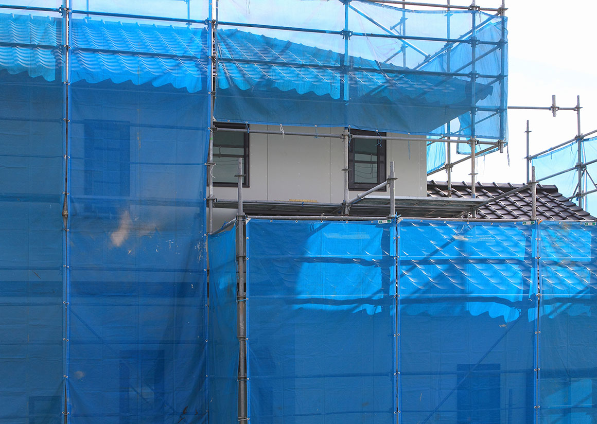
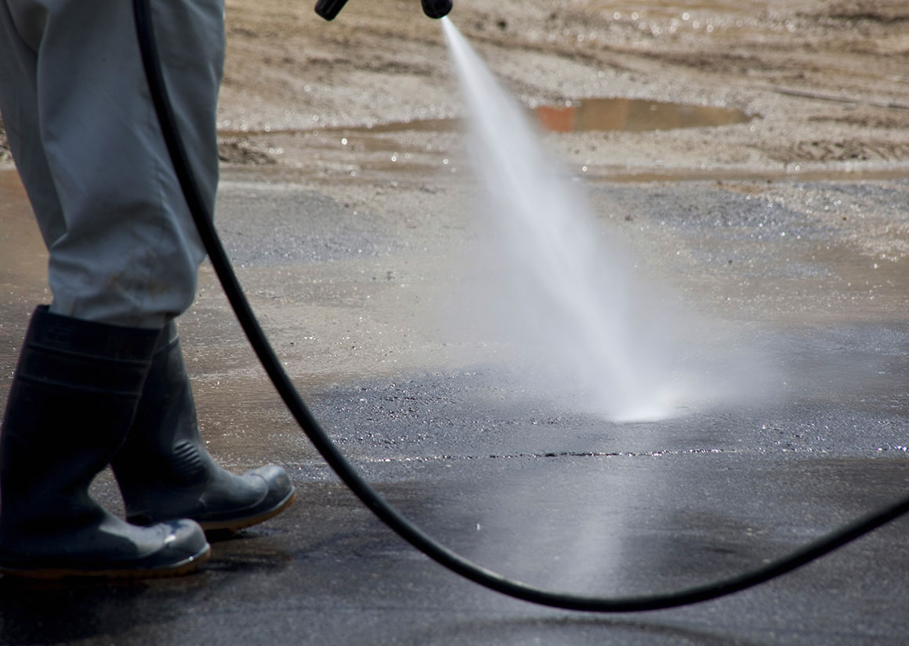

外壁塗装の施工の流れ
初めて外壁塗装を依頼する場合、「どんな流れで打ち合わせや工事が進んでいくんだろう」と不安に思われることと思います。西東京を中心に外壁塗装を承っている株式会社 幸成では、お問い合わせをいただいた時点から、常にお客様目線でのご対応と、安心していただけるためのサービス提供を心がけています。
- STEP1 お問い合わせ
-
- 外壁にひび割れがある
- 色落ち・汚れ・カビが目立つ
- 雨漏りのようなしみが見られる
- 新築から10年くらい経ち、家の健康状態が気になる
上記のような点に心当たりがおありでしたら、無料の診断をご利用ください。外壁や屋根の劣化は見た目だけの問題ではなく、木部・鉄部の腐食など、目に付きにくい部分から住まいの健康が損なわれることにも繋がります。メールやお電話で、お気軽にお問合せください。
- STEP2 お住まいの無料診断
-
経験豊富なスタッフが、お住まいの外壁や屋根を診断いたします。専用の器具で詳細に調査するのはもちろん、現状をデジタルカメラで撮影し、写真を見ながらのご説明も行います。一軒のお宅の診断にかかる時間は60～90分程度です。大規模な雨漏りなどが見られる場合は、その場で応急処置をさせていただく場合もあります。
- STEP3 調査報告・お見積り
-
診断結果を資料にまとめてご報告します。特に問題がない場合には、今後のメンテナンス時期の予測や急な雨漏りの対処方法、また美観を長く保つための方法などをアドバイスいたします。無理にセールスをすることはありませんので、ご安心ください。
軽度の傷みの場合、最善のメンテナンス方法をご提案します。放置しておくと建物の健康に悪影響が思われる劣化が見られる場合には、工事のご提案をいたします。お客様からイメージやご要望をうかがい、塗料の色や種類によって異なる特徴や品質、それぞれのメリット・デメリットなどを詳しくご説明したうえでお見積もりします。見た目のイメージを固めるためのカラーシミュレーションも行っていますので、なんでもご相談ください。
見積もり書はわかりやすく詳細に、曖昧なところのないようお出ししています。ご不明な点がありましたら、ご遠慮なくなんなりとお尋ねください。
- STEP4 ご契約・施工前打ち合わせ
-
お見積もりにご納得いただきましたら、お客様に満足いただけるまで打ち合わせを行い、適した工事内容をご提案します。契約書では、金額・品質・工期・使用部材・保証内容などをしっかり明確にいたします。曖昧な契約や口約束は一切いたしませんので、ご安心くだ
さい。
また、ご近所様へのご挨拶なども当社が承ります。工事前のご挨拶から工事後のご挨拶まで、粗品をお持ちして丁寧に行います。
- STEP5 施工開始
-

1.足場の設置
初日に、まず足場を組みます。足場全体にメッシュシートをかけ、塗料やホコリの飛散を防止します。
2.高圧洗浄
塗装部分を高圧洗浄します。この工程がもっとも近隣の方に影響する作業ですので、事前にしっかりとご挨拶し、工事日程の説明も行います。
3.下地処理
塗装の前に下地の補修を行います。洗浄と下地処理をしっかりと行うことで、塗装が長持ちするようになる重要な工程です。当社の職人が、責任を持って作業いたします。
4.養生・マスキング
塗装しない部分をビニールで覆います。美しく仕上げるには、この工程も重要です。職人の丁寧な仕事が必要になります。
5.塗装
それぞれの塗料に合わせて、最適な方法で塗装を行います。
6.確認・補修
3で行った養生をはがすと、塗料がはみ出す部分が必ず出てくるため、しっかりと補修して全体を美しく仕上げます。7.足場の解体
足場とメッシュシートを撤去し、周囲の清掃を行って工事終了です。
- STEP6 検査・アフターサービス
-
検査担当者がしっかり工事品質をチェックいたします。お客様にもご納得いただけましたら、完了報告書をお渡しして工事終了となります。定期検診などのアフターサービスや保証もお付けしておりますので、末永くお付き合いいただければ幸いです。